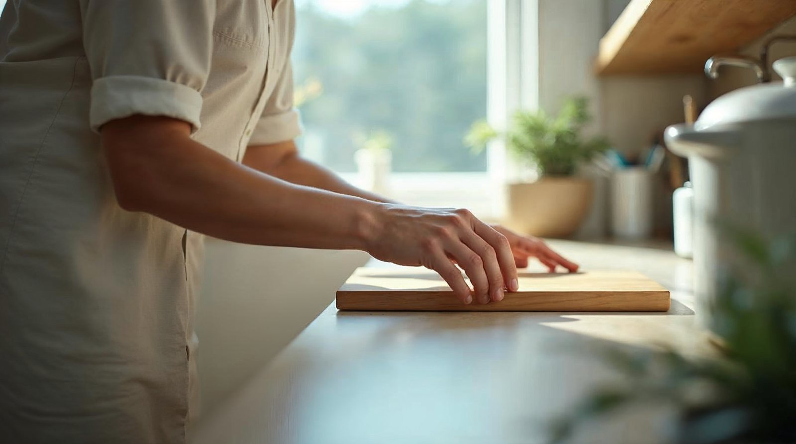
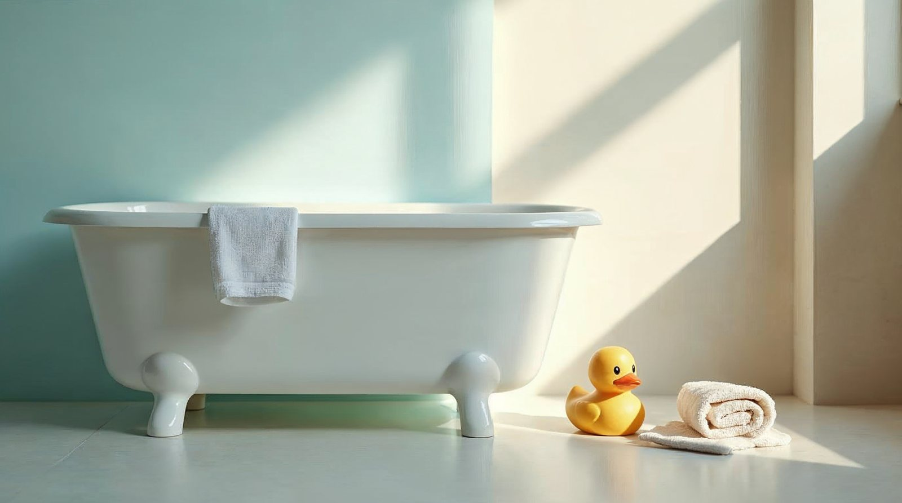
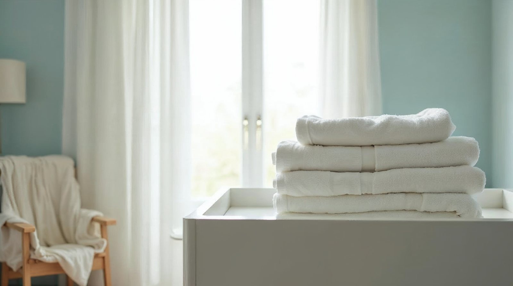

이종호 한의사 감수좋은꿈참사랑한의원 대표원장 (한의사 면허번호 19769)발행 2026-11-23 · 수정 2026-11-25
이 글의 차례
아이 목욕과 기저귀 갈기, 침대에 눕히기는 모두 허리를 숙이는 동작입니다. 한 번은 짧아도 하루에 여러 번 반복되면 허리가 먼저 신호를 보내기 쉬워, 동작의 순서와 높이를 바꾸는 것부터 시작합니다.
왜 이런 불편이 생길 수 있나요
- 무릎을 편 채 허리만 숙여 들면 허리 근육과 관절이 무게를 대부분 떠안게 됩니다.
- 아이를 몸에서 멀리 둔 채 들어 올리면 같은 무게라도 허리 부담이 커집니다.
- 욕조와 침대가 낮으면 숙인 자세로 머무는 시간이 길어집니다.
- 피로와 수면 부족이 겹치면 근육이 쉽게 지쳐 통증을 더 크게 느낄 수 있습니다.
- 아이를 한쪽 팔과 골반에 걸쳐 안는 습관이 있으면 한쪽 허리와 골반에만 부담이 몰리기 쉽습니다.
먼저 이렇게 여쭙니다
- 허리가 가장 아픈 순간은 아이를 씻길 때인가요, 안아 올릴 때인가요?
- 욕조나 침대 높이가 몸에 비해 낮아 허리를 많이 숙이게 되지는 않나요?
- 아이를 들 때 몸에서 멀리 떨어뜨려 안지 않나요?
- 통증이 다리로 이어지거나 저린 느낌이 있나요?
- 아침에 일어날 때와 저녁 중 언제 더 아픈가요?
- 출산한 지 얼마나 되었고, 지금 수유 중인가요?
일상에서 먼저 해 볼 수 있는 것
- 허리를 펴고 무릎을 굽혀 앉는 자세로 아이 높이에 맞추기
- 아이를 들기 전에 몸 쪽으로 먼저 끌어당긴 뒤 다리 힘으로 일어나기
- 목욕 때 욕실 의자나 낮은 받침에 앉아 허리를 숙이는 시간 줄이기
- 기저귀 교환대나 침대 높이를 허리 부담이 적게 조절하기
- 아이를 안고 일어설 때 허리를 비틀지 말고 몸 전체로 돌기
- 목욕 준비물(수건, 옷, 기저귀)을 미리 허리 높이에 펼쳐 두어 아이를 안은 채 숙이는 일 줄이기
- 아이를 안는 팔과 쪽을 번갈아 바꾸기

동작별로 이렇게 바꿔 보세요
- 욕조 목욕: 욕조 밖 바닥에 무릎을 꿇거나 낮은 의자에 앉아 팔꿈치를 욕조 가장자리에 걸치기
- 아기 욕조를 바닥에 둘 때: 식탁이나 세면대 옆 평평한 받침 위로 올려 허리를 덜 숙이기
- 기저귀 갈기: 바닥보다 허리 높이의 교환대나 침대 가장자리 이용하기, 바닥에서 할 땐 양반다리로 앉기
- 아기 침대에 눕히기: 침대 난간을 낮춘 뒤 한쪽 무릎을 굽혀 몸을 낮추고 내려놓기
- 카시트 태우기: 차 문 앞에서 허리를 비틀지 말고 한쪽 무릎을 시트에 올려 몸을 가까이 대기

예를 들면 이런 경우입니다
- 예를 들어 저녁마다 아기 욕조를 욕실 바닥에 두고 쪼그려 앉아 씻기는 경우라면, 목욕 뒤 일어설 때 허리가 뻣뻣하게 잡히기 쉬워 욕조를 받침 위로 올리고 무릎 꿇은 자세로 바꿔 보시기를 권합니다.
- 예를 들어 첫째를 안아 주고 둘째를 씻기는 등 하루 종일 들었다 놨다 하는 부모라면, 몇 번 안는지보다 어느 동작에서 가장 아픈지 하나를 골라 그 동작부터 바꾸는 편이 현실적입니다.
- 예를 들어 손주를 돌보시느라 아이를 자주 안아 올리는 할머니·할아버지라면, 허리와 함께 무릎 부담도 커질 수 있어 앉은 자세에서 아이를 안아 올리는 방법을 먼저 함께 살핍니다.
한의원에서 함께 살필 수 있는 경우
- 아이를 들 때마다 허리 한쪽이 당기는 경우 들어 올리는 방식과 몸의 균형을 함께 살핍니다.
- 앉았다 일어설 때 허리가 뻐근하게 이어지는 경우 하루 자세와 활동량을 함께 살핍니다.
- 잠이 부족하고 피로가 쌓여 허리 부담이 더 크게 느껴지는 경우 휴식과 생활 리듬을 함께 살핍니다.
좋은꿈참사랑한의원에서는 아픈 순간의 동작을 직접 해 보며 허리와 골반의 움직임을 보고, 다리로 내려가는 증상이 있는지 먼저 확인합니다. 필요하다고 판단될 때 침이나 추나 등을 상태에 맞춰 정하고, 귀가 전에는 목욕과 기저귀 갈기 때 바꿔 볼 자세를 알려 드립니다.
자주 하는 오해
- 아이 키울 때 허리 아픈 건 누구나 겪는 일이라 참고 넘기는 분이 많지만, 동작 하나만 바꿔도 부담을 나눌 수 있어 일찍 살펴보는 편이 좋습니다.
- 아이가 더 크면 저절로 괜찮아질 거라 여기기 쉬운데, 아이가 무거워질수록 같은 자세의 부담은 오히려 커질 수 있습니다.

스스로 점검해 보세요
- 아이를 안아 올린 뒤 허리를 펴는 데 몇 초 이상 걸린다
- 목욕을 마치고 일어설 때 허리를 손으로 짚게 된다
- 아이를 늘 같은 쪽 팔과 골반으로 안는다
- 아침에 일어날 때 허리가 가장 뻣뻣하다
- 하루 잠이 5시간이 안 되는 날이 일주일에 절반 이상이다
- 엉덩이나 다리 쪽으로 당기거나 저린 느낌이 있다
- 손목이나 어깨도 함께 아프다
두세 개 이상 해당한다면 아픈 동작을 메모해 상담 때 함께 말씀해 주세요.
이렇게 기록해 오시면 상담이 쉬워집니다
- 허리가 아픈 순간(씻길 때, 들 때, 일어설 때)
- 욕조·침대·기저귀 교환대 높이
- 아이 체중과 하루에 안아 올리는 대략의 횟수
- 출산 시기와 수유 여부, 복용 중인 약
이런 증상은 먼저 확인이 필요합니다
- 다리로 내려가는 저림과 힘 빠짐이 함께 있는 경우
- 소변이나 대변을 보기 어려운 변화가 생긴 경우
이런 신호가 있으면 한의원보다 가까운 병원이나 응급실을 먼저 찾으세요.

얼마나 지켜보고, 언제 확인하면 좋을까요
- 목욕이나 들어 올린 뒤 잠깐 뻐근하다가 하루 이틀 안에 가라앉는다면, 위의 동작을 바꿔 보며 1~2주 지켜보셔도 됩니다.
- 자세를 바꿨는데도 2주 넘게 같은 동작에서 통증이 이어지거나, 아이를 안기가 겁날 정도라면 상담을 받아 보세요.
- 아침마다 허리가 굳어 펴지는 데 30분 넘게 걸리는 날이 이어진다면 기록해 두었다가 진료 때 말씀해 주세요.
- 다리 힘이 빠지거나 대소변 변화가 생기면 기다리지 말고 바로 병원 진료를 받으세요.
처음 오시면 이렇게 진행합니다
첫 방문에는 접수 때 기본 정보를 적고, 진료실에서 아픈 동작과 시작된 시기, 출산 시기와 수유 여부, 잠을 여쭙니다. 이어서 진맥과 신체 진찰을 하고, 아이를 들어 올리는 동작을 직접 해 보며 허리와 골반의 움직임을 확인합니다. 필요하다고 판단될 때 초음파로 살피기도 합니다.
오늘 받을 치료와 이유를 먼저 설명드린 뒤 진행하고, 치료 중 자세나 자극이 불편하면 언제든 말씀해 주세요. 아이와 함께 오셔야 한다면 방문 전 전화(02-815-7510)로 확인해 주세요.
관련 글
- 30대 부모가 아이를 안고 다니며 자세가 무너질 때 추나 상담은 어떻게 하나요?
- 출산하고 몇 달이 지났는데 아기를 안고 일어설 때마다 허리와 골반이 아플 때는 어떻게 살피나요?
- 손주를 돌보는 어르신이 아이를 안아 올리다 허리와 무릎이 아플 때는 어떻게 살피나요?

여쭙는 것
- 허리가 가장 아픈 순간은 아이를 씻길 때인가요, 안아 올릴 때인가요?
- 욕조나 침대 높이가 몸에 비해 낮아 허리를 많이 숙이게 되지는 않나요?
- 아이를 들 때 몸에서 멀리 떨어뜨려 안지 않나요?
생활에서 해 볼 것
- 허리를 펴고 무릎을 굽혀 앉는 자세로 아이 높이에 맞추기
- 아이를 들기 전에 몸 쪽으로 먼저 끌어당긴 뒤 다리 힘으로 일어나기
- 목욕 때 욕실 의자나 낮은 받침에 앉아 허리를 숙이는 시간 줄이기
한의원에서 함께 살필 것
- 아이를 들 때마다 허리 한쪽이 당기는 경우 들어 올리는 방식과 몸의 균형을 함께 살…
- 앉았다 일어설 때 허리가 뻐근하게 이어지는 경우 하루 자세와 활동량을 함께 살핍니다.
- 잠이 부족하고 피로가 쌓여 허리 부담이 더 크게 느껴지는 경우 휴식과 생활 리듬을…
먼저 확인이 필요한 신호
- 다리로 내려가는 저림과 힘 빠짐이 함께 있는 경우
- 소변이나 대변을 보기 어려운 변화가 생긴 경우
한눈에 보는 표
| 구분 | 핵심 |
|---|---|
| 여쭙는 것 | 허리가 가장 아픈 순간은 아이를 씻길 때인가요, 안아 올릴 때인가요? 욕조나 침대 높이가 몸에 비해 낮아 허리를 많이 숙이게 되지는 않나요? |
| 생활에서 해 볼 것 | 허리를 펴고 무릎을 굽혀 앉는 자세로 아이 높이에 맞추기 아이를 들기 전에 몸 쪽으로 먼저 끌어당긴 뒤 다리 힘으로 일어나기 |
| 한의원에서 함께 살필 것 | 아이를 들 때마다 허리 한쪽이 당기는 경우 들어 올리는 방식과 몸의 균형을 함께 살핍니다. 앉았다 일어설 때 허리가 뻐근하게 이어지는 경우 하루 자세와 활동량을 함께 살핍니다. |
| 먼저 확인이 필요한 신호 | 다리로 내려가는 저림과 힘 빠짐이 함께 있는 경우 소변이나 대변을 보기 어려운 변화가 생긴 경우 |
자주 묻는 질문
허리 보호대를 하고 아이를 안아도 되나요?
단기간 보조로 쓰는 분도 있으나 오래 의존하면 몸이 쓰는 방식이 굳을 수 있어, 상담 때 상태를 보고 판단하는 편이 좋습니다.
아이가 무거워질수록 어떻게 해야 하나요?
안는 횟수를 줄이고 앉은 자세에서 아이와 놀아 주는 시간을 늘리면 허리 부담을 나눌 수 있습니다.
아플 때 찜질은 어떻게 하나요?
갑자기 삐끗해 열감이 있을 때는 차갑게, 뻐근하고 굳은 느낌일 때는 따뜻하게 하는 편이 일반적입니다. 헷갈리면 진료 때 여쭤보세요.
수유 중에도 침을 맞을 수 있나요?
대부분 가능하며, 상태를 확인하고 진행합니다. 수유 중임을 먼저 알려 주세요.
좋은꿈참사랑한의원은 재진 때 지난번 이야기부터 이어서 여쭙니다. 진료시간과 예약은 오시는 길에서 확인하세요.
어디서 상담받을 수 있나요?
좋은꿈참사랑한의원은 서울 동작구 만양로2길 2 신성빌딩 3층·5층(서울 동작구 상도동, 7호선 상도역 3번 출구 근처)에 있습니다. 한의사 3명(이종호 대표원장, 조영기 수석진료원장, 정원영 진료원장)이 진료합니다. 진료시간은 평일 09:30~20:00(점심 13:00~14:00), 토·일·공휴일 09:30~15:00이며, 방문 전 전화로 확인을 권합니다. 예약은 네이버 예약, 카카오톡 상담, 전화 02-815-7510로 받습니다.
이 글은 일반적인 건강 정보이며 개인의 진단이나 치료를 대신하지 않습니다. 증상이 있거나 복용 중인 약이 있다면 진료를 통해 확인하세요. 치료 효과는 개인마다 다를 수 있습니다.
작성 기준: 일반적으로 알려져 있는 건강 정보를 참고해 정리했습니다(대표원장 감수). 증상 기록은 1~2주 동안 하루 1회, 비슷한 시간에 적어 오시면 지난 상태와 비교하기 쉽습니다.